Beast
2E @ MIT East Campus
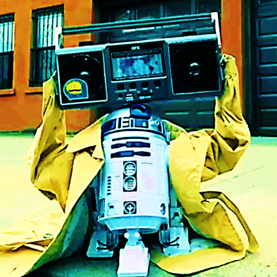
Year: hahaha we'll see
Major: 21E -- 6 + CMS (computer science + comparative media studies)
"Perennially reading "An Unkindness of Ghosts" and having too many media takes. May or may not spend too much time thinking about FRED DESK. 🇵🇷 🇵🇷 🇵🇷"
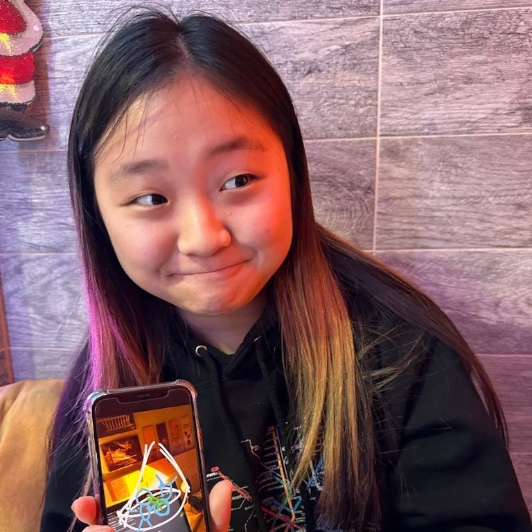
Year: 2026
Major: 6 + WGS (computer science + women's & gender studies)
"I LOVE NERTZ!!!! i enjoy listening to music (jo yuri and iz*one! <3), reading good (and bad ;-;) fic, cool graphs and data, bread, & spending time with family and friends. my favorite quote: "how lucky i am to have something that makes saying goodbye so hard" - winnie the pooh, in the voice of my oldest sister zizi"
Year: 2024
Major: 6-3 (computer science)
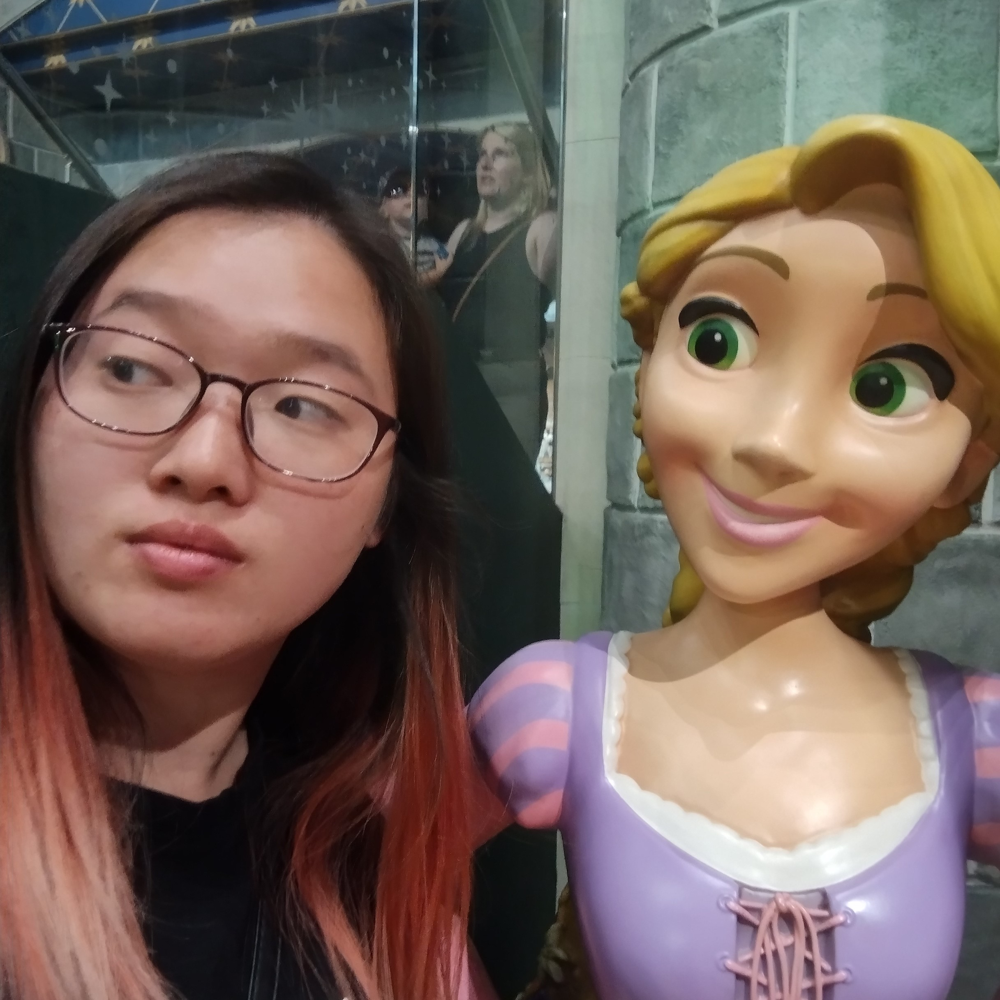
Year: 2024
Major: 6-3 (computer science)
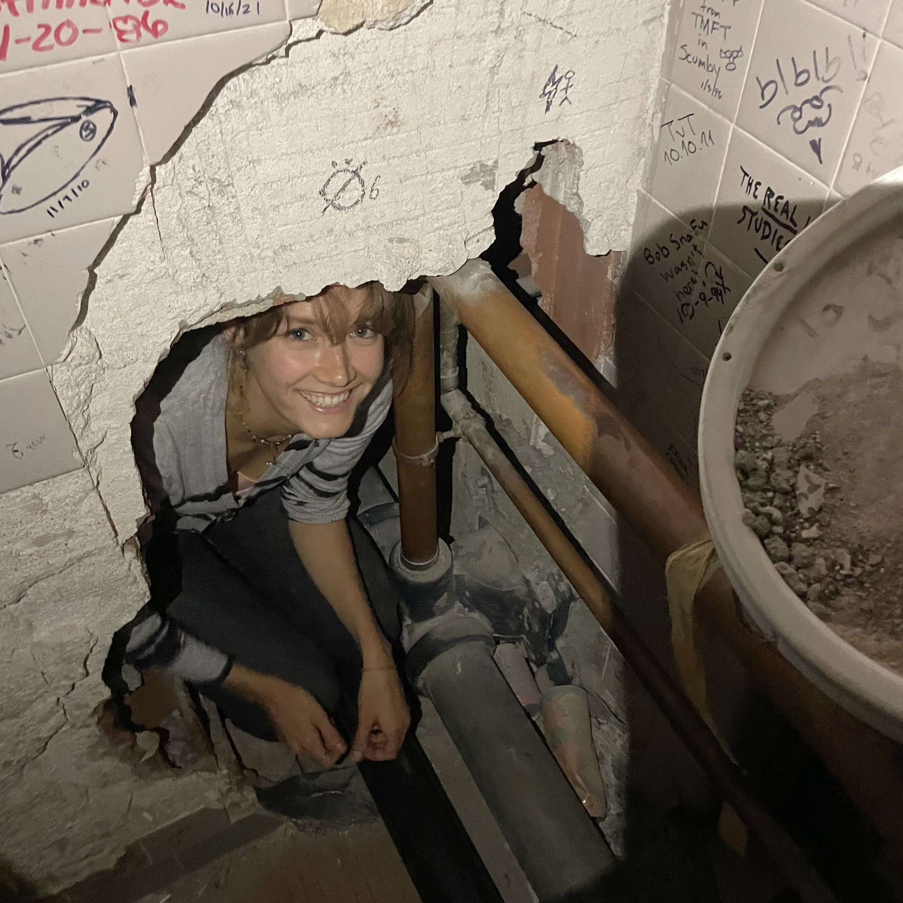
Year: 2024
Major: 10B + 7 (chemical-biological engineering + biology)
"I guess I like a lot of things - I enjoy running + cycling, baking, reading and writing, playing music... aka down to do or try pretty much whatever! Favorite recent read is definitely Anthony Bourdain's Kitchen Confidential (+ all of his shows). Although my all time favorite thing to watch is definitely old Top Gear UK. Instagram: https://www.instagram.com/jose.phos.phine/.
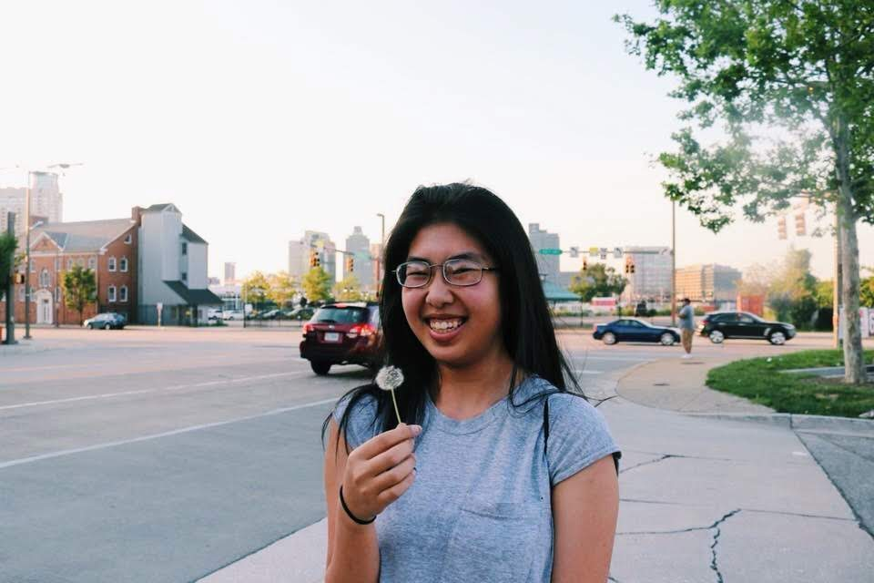
Year: 2025.5
Major: 2 + 17 (meche + political science/global studies)
"hi i'm kano! i like to make things, break things, and play with things. kurt vonnegut is my current fav author: cat's cradle and slaughterhouse-five are excellent books. i enjoy many many quotes, this week's notable one being "the same hot water that softens the potato also hardens the egg." this is my ig, where i'm most active: https://www.instagram.com/pakaprow. this is my twitter, where i'm most dangerous: https://twitter.com/bbywch. this is my facebook, where my parents follow me (and you know how that goes): https://www.facebook.com/kanotung. thank you."

Year: 2024
Major: 24-1 + 8-flex (philosophy + astrophysics)
"hello, i am keaten! i have a companion dog whose name is tiptoe, and i enjoy reading a lot (fantasy, philosophy, scifi), walking, having good conversations, cooking vegan foods, traveling and meeting people, and dancing :)"
Year: 2023
Major: 6-1 + 18 (computer science + mathematics)
Year: 2026
Major: 16 (aerospace engineering)
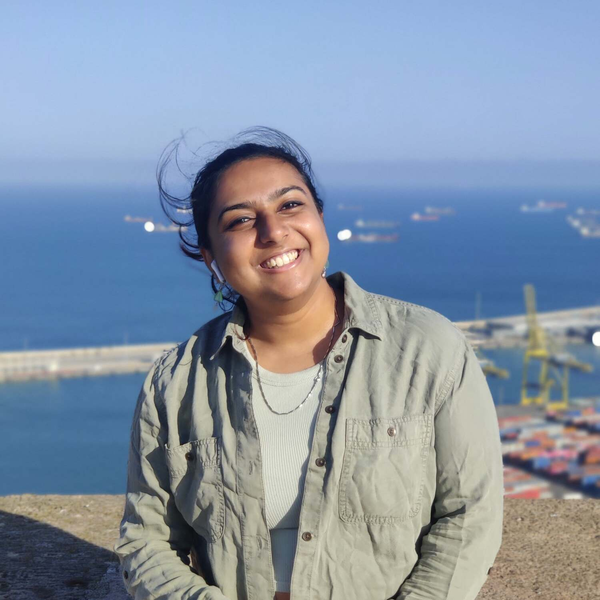
Year: 2024
Major: 20 + 11 (biological engineering + urban studies and planning)
"hi! I'm a junior right now academically interested in bioengineering, sustainability, and social justice. my hobbies include getting enough sleep, listening to music, and hanging out with the beasties <33 when I'm not on hall, you can find me wandering Boston, working out at the Z, or joining yet another club"
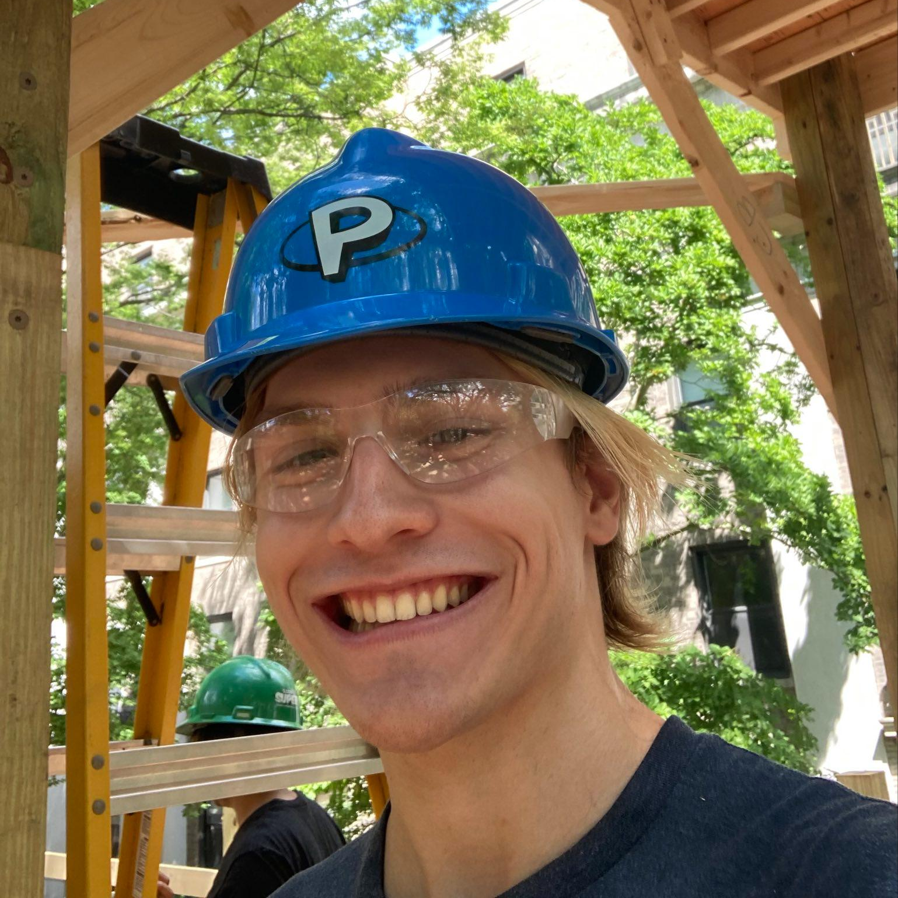
Year: 2024
Major: 6-9 (computation and cognition), minors 18 + 24-2 (mathematics + linguistics)
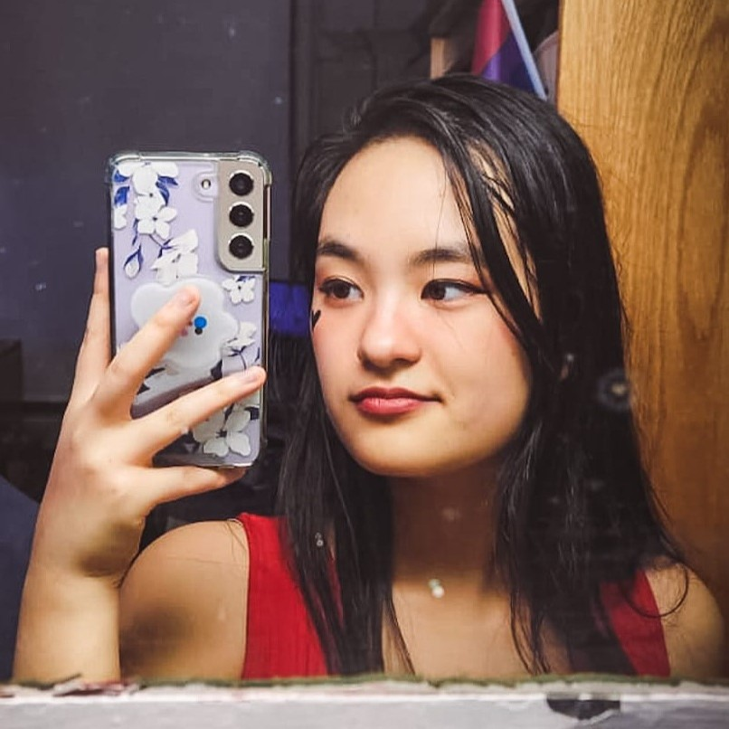
Year: 2025
Major: 6-9 (computation and cognition)
"hi i'm rai! resident party poster designer here. always down to make cursed things in photoshop :)) i'm also on gamescomm (hmu to play overcooked, moving out, or castle crashers!!) and swagcomm (plz stop me or i Will make PEMIS merch). u can see what i'm up to on insta @raiccoon altho lately i've only been posting ADT and my girlfriend oops"

Year: 202?
Major: 6-3 + 24-2 (computer science + linguistics)
"Hi, I'm Riley! Outside of academics, my interests include music and fire spinning. I also spent two and a half years being "the speaker guy" at East Campus. I love to listen to people talk about things they're passionate about, and I'm almost always down to get roped into whatever shenanigans people are getting up to."

Year: 2026
Major: 18 (mathematics)
"I'm a prospective math major who took a gap year to study Korean before coming to MIT. My hobbies include cooking, blogging, and teaching friends how to play Nertz!"

Year: 2023
Major: 9 + 6-3 (brain and cognitive sciences + computer science and engineering)
"I'm a violist who loves reading graphic novels and otherwise exploring the great indoors. I'm also one of the people who's behind this version of our Beast website! Feel free to say hi at t [underscore] gao [at] mit [dot] edu :)"

Year: 2025
Major: 2A (mechanical engineering - manufacturing)
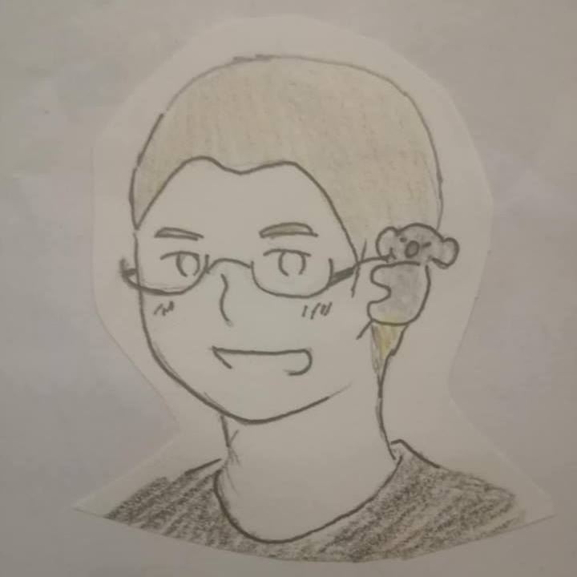
Year: 2023
Major: 6-2 (computer science)
"I am a person who likes playing video games and wasting time on youtube"
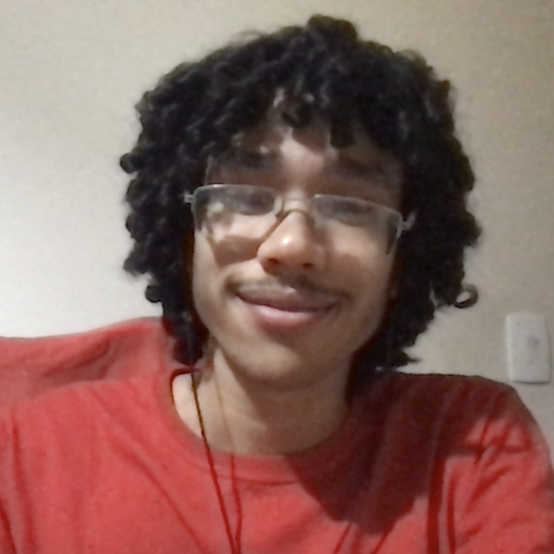
Year: 2024
Major: 5 (chemistry)
"I like to talk with people, cook and puzzles. Most likely place to find me at 8am is in the kitchen making banana pancakes (some would argue it is a banana omelette) talking with people passing by, I will be very grateful if you make the kitchen smell like something good like coffee. You can ask me to try some desserts you probably never tried before"
Alums
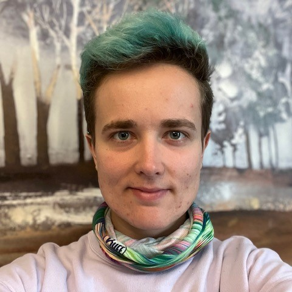
Year: 2019
Major: 8 (physics), minor in computer science
"I love cuddles and passionately yelling at people about physics"
Year: 2017
Major: 6-3 (computer science)
Year: 2020
"Had way too much fun with cruft from the loading dock and ate way too much bad free food Had a blast overall and hope the vlla & speaker system Willy and I setup lives on"
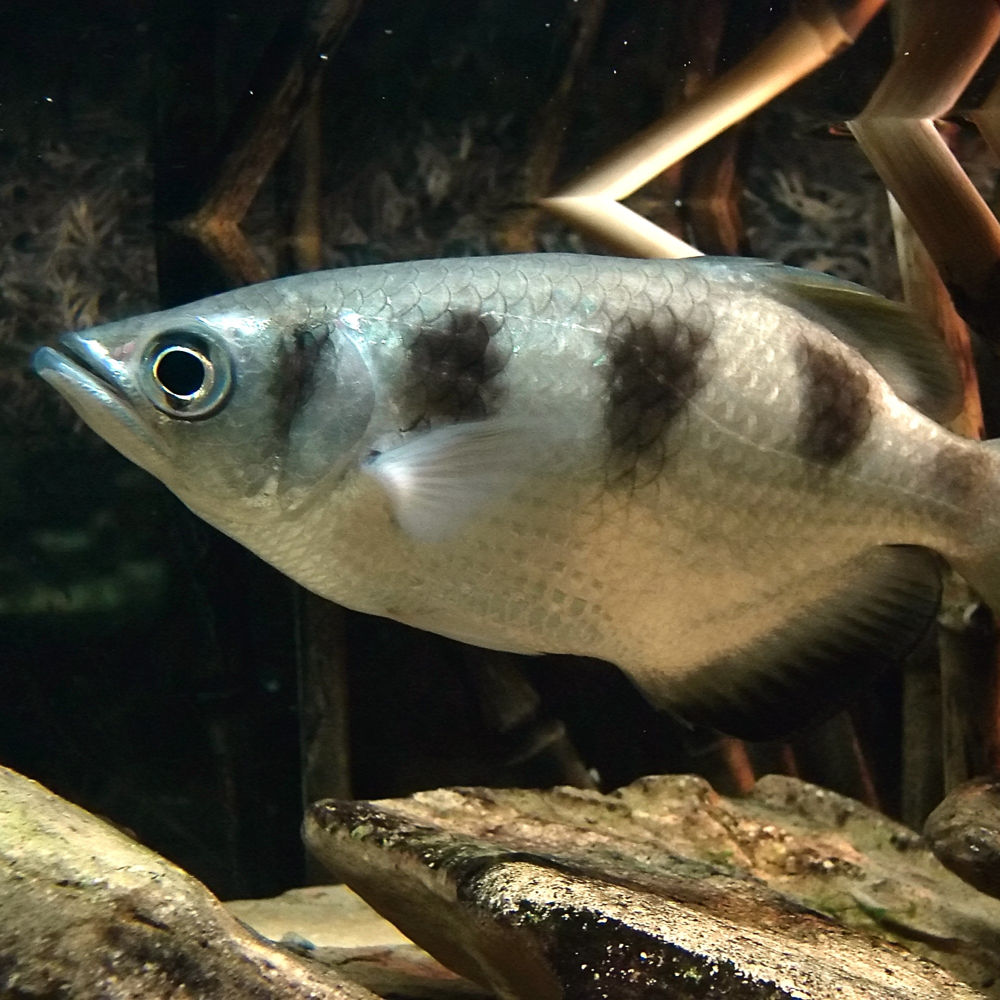
Year: 2014
Major: 2 (mechanical engineering)
"Hi! I had a great time living on Beast for all four years of undergrad. I'm currently working as an engineer for the government. My undergrad thesis was supposed to be about archer fish (in my profile) but unfortunately they all died during Winter Break. On another note... in my free time I play video games (just like in undergrad lol) and read light novels. I love Miyazaki films especially Howl's Moving Castle and Spirited Away. I hope everyone enjoys their life at MIT and treasure the time you spend with your friends there :)"
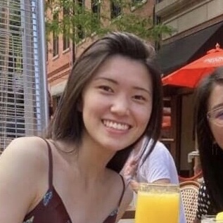
Year: 2022
Major: 6-14 (computer science and economics)
"NYC finance bro and EDM bro"
Year: 2015
Major: 6-3 (computer science)
"I managed to barely survive and graduate, and now I've been working at Google for 5 years. Currently enjoying remote work, though it's made me into a bit of a hermit. My years on Beast were some of the best (and hardest) years of my life, so, uh, make the most of it!"
Year: 2020
Major: 9 (brain and cognitive sciences), minor in 7 (biology)
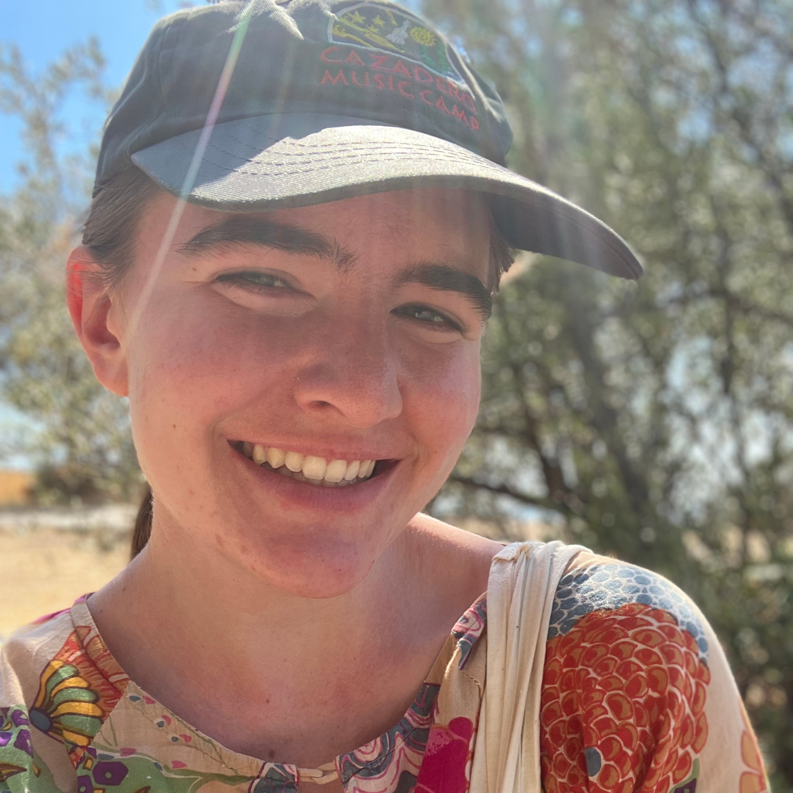
Year: 2022
Major: 21S -- 5 + CMS (chemistry + comparative media studies)
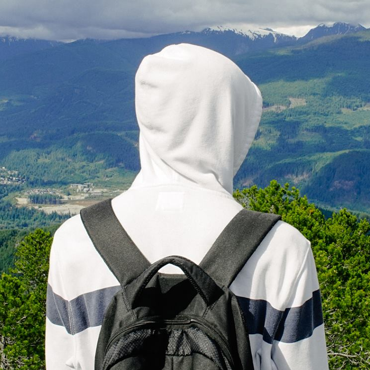
Year: 2017
Major: 24-2 (linguistics)
"Howdy! Linguistics major-turned-high-school-physics-teacher here, musician and writer, obsessed with music, languages, and books. Avid concertgoer, traveler, and hiker. Usually a little bit confused and always very excited!"
Year: 2018
Major: 6-3 (computer science) and one class away from a minor in CMS!
"I loved living on Beast because it was a place where I felt very free to become myself and meet and have fun with friends turned family. I did an M.Eng and kept visiting Beast. I am currently a software engineer living in the bay area in CA and Wolf Alice is my favorite band. at MIT, i co-led MIT Design for America, was an FLP and Camp Kesem counselor, helped plan MakeMIT hardware hackathon for 2 years, and danced in MIT Dance Troupe and MIT Bhangra. I loved taking project-based classes and HASS classes and being part of the Lifelong Kindergarten group at MIT Media Lab."
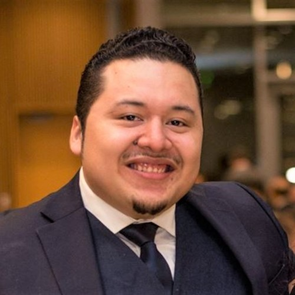
Year: 2018
Major: 16 (aerospace engineering)
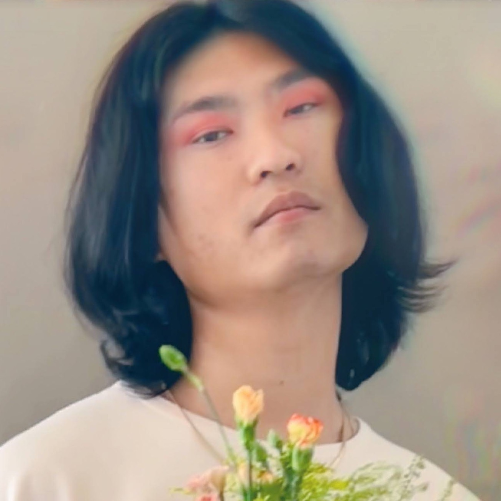
Year: 2019
Major: 21W (what's that?)
"I do artsy/design/coding stuff... https://www.instagram.com/williamvvu"